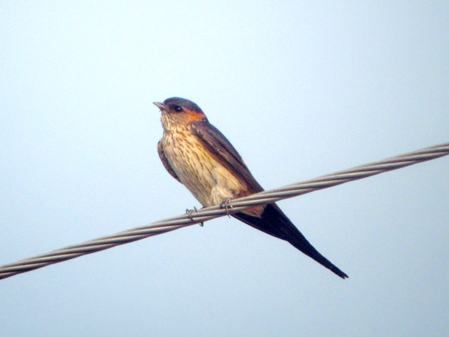

लाल-कमर अबाबीलRed-rumped Swallow
Cecropis daurica · Hirundinidae · BRD-0214

- Scientific name वैज्ञानिक नाम
- Cecropis daurica (Laxmann, 1769)
- Family कुल
- Hirundinidae
- Hindi हिंदी
- लाल-कमर अबाबील
- Local names स्थानीय नाम
- lal kamar ababeel, ababeel, red rumped swallow, swallow
- Status here यहाँ की स्थिति
- native
- Movement आवागमन
- Resident; numbers rise with migrants
- Known from कहाँ दर्ज
- Others have published records from the Basti–Ayodhya districts बस्ती–अयोध्या के ज़िलों से दूसरों के प्रकाशित अभिलेख
- IUCN IUCN
- LC
- Review समीक्षा
- audited and independently read
When to look कब देखें
Expected mainly in September, October, November, December, January, February, March. मुख्यतः सितंबर, अक्टूबर, नवंबर, दिसंबर, जनवरी, फ़रवरी, मार्च में अपेक्षित।
Breeds in Himalayan foothills (March–August); some individuals move into the Gangetic plain as passage migrants and winter visitors from September to March (Grimmett et al. 2011). All migrants and visitors →
Tell it apart from इनसे अलग पहचानें
लाल-कमर अबाबील / Red-rumped Swallow
Cecropis daurica (Laxmann, 1769) — Hirundinidae
लाल-कमर अबाबील — यह छोटी, तेज़ उड़ने वाली हवाई कीटभक्षी चिड़िया पूर्वी उत्तर प्रदेश में सितंबर से मार्च तक देखी जाती है। इसकी सबसे बड़ी पहचान इसकी चमकदार गहरी नीली-काली पीठ और कमर पर लाल रंग का पैच (rufous-buff rump) है। इसका गला भी कत्थई-लाल होता है और पूंछ गहरी कांटेदार होती है। यह अकेले या छोटे झुंड में हवा में तेज़ी से उड़ता है और उड़ते हुए कीड़ों को पकड़ता है।
Quick Identification त्वरित पहचान
| Feature | Description |
|---|---|
| Size | Small swallow; 16–17 cm including tail; slender build |
| Rump | Distinctively rufous-buff or red (diagnostic); contrasts with dark back |
| Tail | Deeply forked with long outer streamers; dark blue-black |
| Throat | Rusty-red or chestnut; distinguishes from barn swallows |
| Back | Glossy blue-black |
| Underparts | Pale buff or whitish; lower back and rump obviously rufous |
| Flight | Swift, darting; often singly or in small groups; less gregarious than barn swallows |
Field tip: Look for a small swallow with a distinctive rufous rump and rusty throat, flying over open country or near villages. The rufous rump visible from below is the key feature. Flies lower than barn swallows, often closer to cliffs or buildings. Watch over fields and grasslands in winter.
हिंदी — कैसे पहचानें:
छोटी अबाबील; कमर पर लाल रंग।
गला भी लाल-भूरा।
बहुत तेज़ उड़ने वाली।
अकेले या छोटे झुंड में दिखता है।
Morphology आकारिकी
Biometrics:
| Measurement | Range |
|---|---|
| Total length | 160–170 mm |
| Wing (flattened chord) | 100–115 mm |
| Tail | 70–110 mm |
| Bill | 8–10 mm |
| Tarsus | 10–12 mm |
| Weight | 18–24 g |
Size: 16–17 cm long; wingspan 30–35 cm. Weight 18–24 g.
Plumage: Upperparts glossy blue-black. The lower back, rump and upper tail coverts are distinctively rufous-buff or rusty-red, contrasting sharply with the dark back. Throat and forehead are chestnut-red or rusty. Breast buff with a dark breast band. Underparts buff-white. Tail is deeply forked, dark blue-black.
Bare parts: Bill short and black. Irises dark. Legs and feet blackish and extremely small.
Sexes: Males have longer tail streamers; females similar but slightly duller on rump.
Vocalisations
- Song: A rapid, twittering warble on the wing; less musical than barn swallow.
- Flight call: Distinctive harsh tzip-tzip or chirr-chirr, given in flight.
- Contact calls: Soft chirps between individuals.
हिंदी: उड़ते समय "ट्विप-ट्विप" की आवाज़। ख़राब आवाज़ वाली चिड़िया है।
Behaviour & Ecology व्यवहार और पारिस्थितिकी
Aerial insectivore: Hunts small flying insects throughout the day, particularly at dawn and dusk. Catches gnats, small flies, mosquitoes and insect larvae in flight.
Solitary to gregarious: Less gregarious than barn swallows; often seen singly or in small groups of 5–10 birds, sometimes in mixed flocks with barn swallows.
Roosting: Communal roosts in reed beds, tall grass or cliff crevices, especially in early morning and evening.
Nesting (breeding range): Builds a tubular mud nest under cliff overhangs or attached to cave walls, bridges or large buildings. The nest entrance faces downward, a distinctive feature separating it from barn swallow nests.
Winter behaviour in eastern UP: Remains in open cultivated areas, flying low over fields and water bodies, joining loose feeding flocks in the evening.
हिंदी: अकेले या छोटे झुंड में रहता है। बहुत फुर्तीला; सारा दिन कीड़े पकड़ता है। रीड़ों में सोता है।
Life Cycle / Phenology जीवन चक्र
Partial migrant: In the breeding range (Himalayas and western Asia), breeds March–August. In eastern UP, a passage migrant and winter visitor, September–March.
Arrival: September–October; peak numbers November–February.
Departure: February–March, with most birds gone by April.
Breeding: Not known to breed in Uttar Pradesh plains. Arrives already in breeding condition or acquires it during winter stay.
Moult: Complete moult before arrival at wintering grounds.
हिंदी: सितंबर में आते हैं, मार्च तक रहते हैं। प्रजनन उत्तर प्रदेश में नहीं करते।
Host Plants or Prey आहार
Flying insects:
- Small flies and gnats
- Mosquitoes
- Flying ants
- Tiny moths and beetles
- Dragonfly nymphs (caught as they emerge)
Caught entirely on the wing during rapid, darting flight.
हिंदी: उड़ते हुए कीड़े पकड़ता है। मच्छर और मक्खियाँ इसका मुख्य भोजन हैं।
Predators / Natural Enemies शत्रु
- Raptors: Hobby falcons, Eurasian Kestrels, shikras catch swallows in flight
- Corvids: House crows may raid nests in the breeding range
- Mammals: Domestic cats; rarely weasels
Agricultural / Human Relevance कृषि प्रासंगिकता
Insect control: By consuming large numbers of flying insects, the Red-rumped Swallow helps control mosquitoes, agricultural pests and disease vectors.
Legal status: Protected under the Wildlife Protection Act 1972. Not hunted. Populations stable across the region, though nesting habitat loss in the breeding range due to construction is a concern.
Expected Locally स्थानीय रूप से अपेक्षित
Not a field record. Written from published accounts for eastern Uttar Pradesh. No confirmed local sighting yet — if you have seen it, that is what the atlas needs.
अभी तक स्थानीय पुष्टि नहीं। यह विवरण प्रकाशित स्रोतों से है, किसी अवलोकन से नहीं।
GBIF holds published records from the wider Awadh–Purvanchal plain, none yet from Basti–Ayodhya specifically. Expected from September to March over open grasslands, paddy fields, and near rocky outcrops or buildings where the species may find shelter. Most likely during migration (September–October and February–March). More common in areas with cliff faces or stone buildings that provide roosting sites. The first local record would be a photograph showing the distinctive rufous rump and rusty throat, with place and date, submitted through the About page.
हिंदी: सितंबर से मार्च तक खुली खेतों पर देखे जाने की उम्मीद है। खासकर पलायन के समय। पहला रिकॉर्ड फोटोग्राफ के साथ तारीख़ और जगह दिखानी चाहिए।
Distribution वितरण
Global range: Northern Africa, southern Europe, and central Asia from Morocco to Japan. Multiple subspecies; only C. d. daurica occurs in India.
In India: Breeds in the Himalayas and northwest; winters throughout the plains and peninsula from October to March.
In Uttar Pradesh: Winter visitor and passage migrant; more common in eastern districts. GBIF records from the wider Awadh plain.
In Basti district / eastern UP: Winter visitor from September to March; expected over open habitats and near buildings.
Research Questions शोध प्रश्न
- How many of the red-rumped swallows recorded in eastern UP are passage migrants versus true winter residents?
- Do red-rumped swallows show site fidelity, returning to the same winter territories year after year?
- क्या इस अबाबील की आबादी में सर्दियों के मौसम में बदलाव होता है?
- What is the detailed diet composition of red-rumped swallows wintering in the Gangetic plain?
- How does the distribution pattern of red-rumped swallows compare to barn swallows in the region? (Can be tracked by observation.)
- क्या पत्थर की इमारतों में कमी से इस पक्षी की संख्या में भी कमी आ रही है?
Similar Species मिलती-जुलती प्रजातियाँ
| Species | Key Difference | Hindi | Field Rule | |
|---|---|---|---|---|
| [[barn_swallow\ | Barn Swallow]] (Hirundo rustica) | Barn swallow has a cream breast, no rufous rump; throat dark chestnut, not extending to underparts | घर अबाबील | Red-rumped swallow shows obvious rufous rump and buff underparts. Barn swallow's rump is dark. |
| [[dusky_crag_martin\ | Dusky Crag Martin]] (Ptyonoprogne concolor) | Larger, dusky brown; no rufous on rump; different behaviour; cliff-dwelling | — | Dusky crag martin is much larger and uniformly dusky; lacks the contrast of red-rumped swallow. |
Field rule: Red-rumped swallow shows a distinctive rufous rump and rusty throat. If the rump is dark and back is glossy dark blue, it is a barn swallow. If the tail has extremely long filaments beyond the fork, it may be a wire-tailed swallow.
Taxonomy & Classification वर्गीकरण
Original description. Described by Laxmann in 1769 in Museum Boltenianum as Hirundo daurica. Type locality is the Caspian region.
Subspecies. Two subspecies; C. d. daurica (Caspian and central Asian breeding populations) occurs in India.
Family and order placement. Order Passeriformes; family Hirundinidae. Formerly in genus Hirundo, transferred to Cecropis by Boie (1844) based on distinctive nest structure.
Phylogenetic notes. Closely related to wire-tailed swallow (Elachura fyafferi) and other tube-nesting swallows of Africa and Asia.
IUCN status rationale. Least Concern globally. Widespread, adaptable, and stable populations. Protected in India under the Wildlife Protection Act 1972.
हिंदी: भारत में सर्दियों में आने वाली प्रवासी चिड़िया। सभी देशी कानून से सुरक्षित।
Photo Gallery फोटो गैलरी
No photos yet — add field photos to media/species/red_rumped_swallow/ and run node scripts/sync_photos.js.
Wanted photos:
- Adult in flight showing rufous rump
- Perched bird showing rusty throat and rump
- Flock in winter
- Flying over fields
References संदर्भ
- Laxmann, E. (1769). Museum Boltenianum. Rostock. Pp. 13.
- Ali, S. & Ripley, S. D. (1987). Handbook of the Birds of India and Pakistan. Vol. 4 (Frogmouths to Flycatchers). Oxford University Press, Delhi. Pp. 241–243.
- Grimmett, R., Inskipp, C. & Inskipp, T. (2011). Birds of the Indian Subcontinent (2nd edn). Oxford University Press, Delhi. Pp. 328.
- Rasmussen, P. C. & Anderton, J. C. (2012). Birds of South Asia: the Ripley Guide (2nd edn). Lynx Edicions, Barcelona. Vol. 2, Pp. 516.
- GBIF Occurrence Data — Cecropis daurica, India.
- IUCN Red List (2023). Cecropis daurica — BirdLife International. IUCN, Cambridge. Status: Least Concern.
Source file: species/fauna/birds/red_rumped_swallow.md